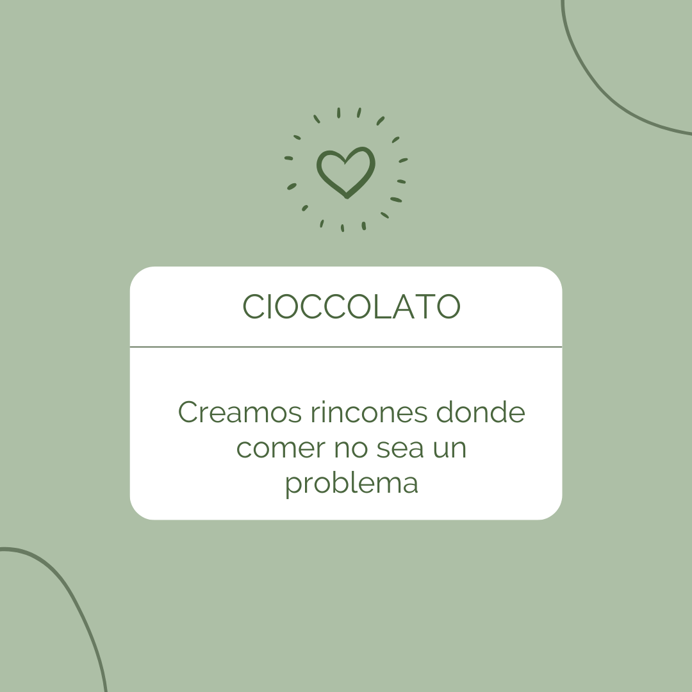

¿Quiénes somos?
Somos una empresa dedicada a vender golosinas gluten free a todo el país. Nuestra empresa nace en Argentina, en el año 2020 cuando por la pandemia se hizo más visible la falta de productos para celíacos.
Por eso nuestra misión es poder estar al alcance de todos/as quienes por ser intolerantes al gluten o celíacos, son afectados por la falta de estos.

Para conocer un poco más te invitamos a hacer click en el logo de sin tacc.